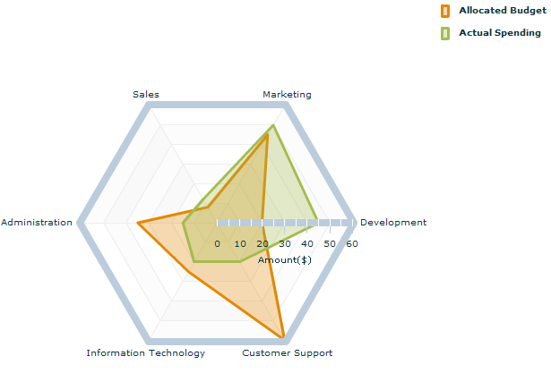

Radar charts are useful when you want to compare a limited
set of unrelated factors such as speed, height, or weight. A radar
chart has two axes: a radial axis and an angular axis that handles
categories. In a radar chart, a point close to the center on any axis
indicates a low value and a point near the perimeter indicates a high
value.
You can customize the look and feel of a radar chart,
including the two radial axis renderers, the angular axis renderer,
and the radial and angular grids. A radar chart can contain series
of the following types:
The different series types can be combined into one radar
chart.
The value of type can be:
- Circular
The grid and the angular axis renderer
are made up of concentric circles.
- Polygonal
The grid and the angular axis renderer
are made up of concentric polygons.
IBM® ILOG Elixir radar charts are based on Adobe® Flash® Builder™ 4 and to be fully functional the following
features require its installation:
Animation
Legend
Alternate axes (LogAxis, DateTimeAxis, CategoryAxis)
Polar data canvas
Alternate item renderers (TriangleItemRender, CircleItemRenderer...)
The following example of a radar chart shows two line
data series representing the allocated budget and the actual spending
for a number of different departments in a company. The radial axis
represents the cost and the angular axis the departments of the company.
